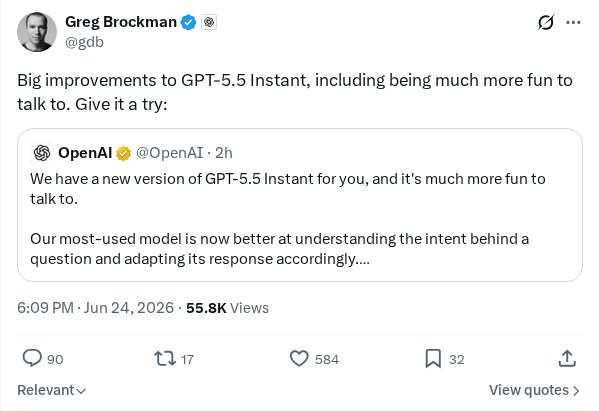
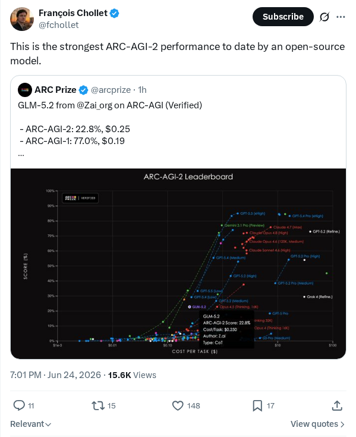
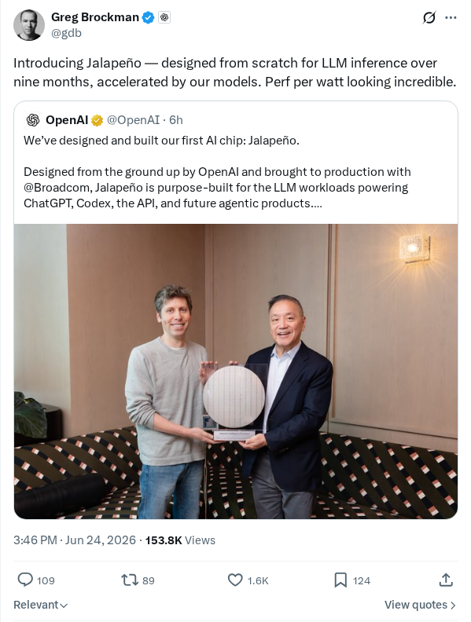
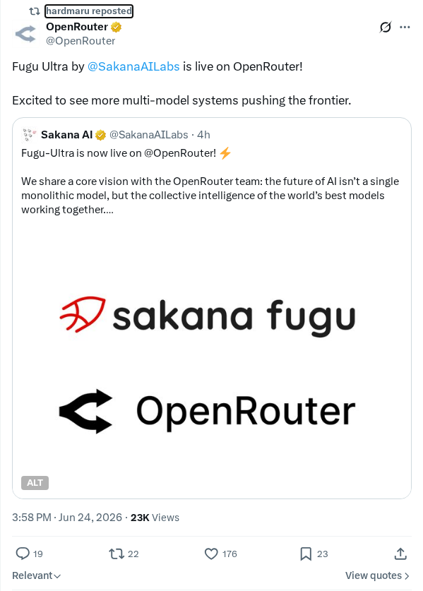
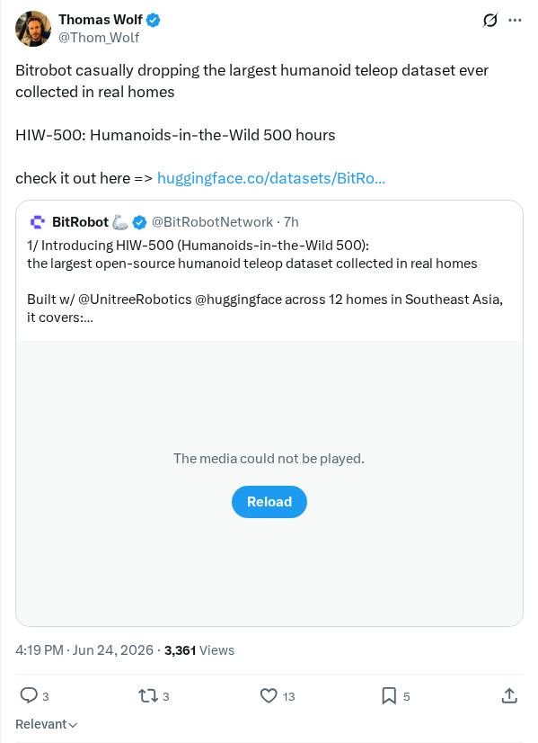
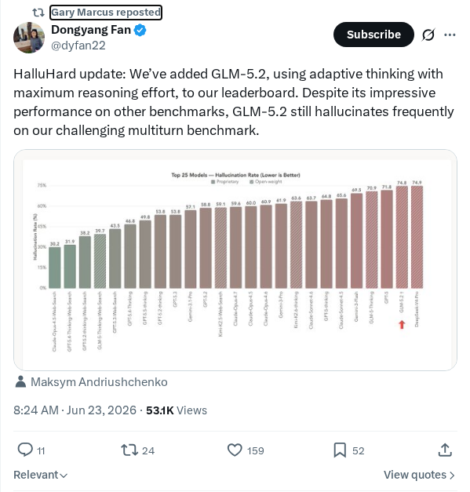
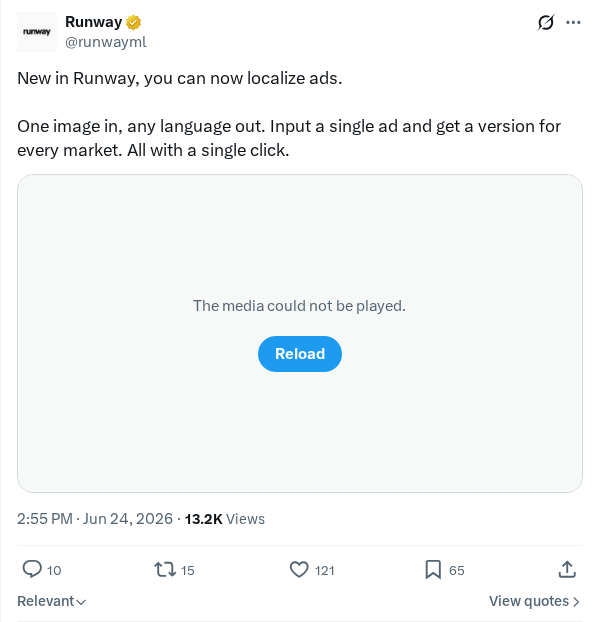
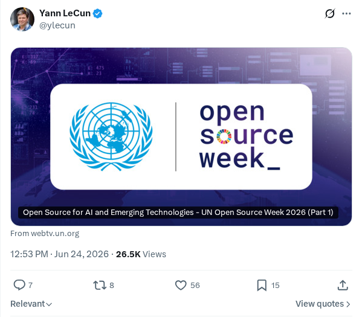

与 Broadcom 共同推出 Jalapeño 推理芯片
OpenAI 与 Broadcom 合作推出了 Jalapeño，这是一款专为大语言模型推理而设计的定制 AI 硅芯片。该处理器专注于优化先进生成式模型的部署，通过提升企业级 AI 系统中的操作性能、能效和可扩展性。这一联合工作是管理下一代人工智能技术硬件需求的一项战略性举措，专门针对推理工作负载量身定制，旨在帮助扩展模型部署。
AI 前沿资讯、研究与趋势精选
OpenAI 与 Broadcom 合作推出了 Jalapeño，这是一款专为大语言模型推理而设计的定制 AI 硅芯片。该处理器专注于优化先进生成式模型的部署，通过提升企业级 AI 系统中的操作性能、能效和可扩展性。这一联合工作是管理下一代人工智能技术硬件需求的一项战略性举措，专门针对推理工作负载量身定制，旨在帮助扩展模型部署。
OpenAI 宣布与 Appia Foundation 建立合作伙伴关系，旨在帮助为先进 AI 构建共享标准、稳健的评估框架和安全实践。该倡议旨在在人工智能领域建立统一的基准和协作指南，以应对突发风险。通过在全球安全标准上的合作，双方寻求在 AI 能力不断进步的同时，确保安全的发展和对齐。
Google 为 Gemini 3.5 Flash 模型推出了全新的电脑使用功能，支持主动桌面自动化。该功能使模型能够通过解读屏幕上的视觉元素、执行按键、控制光标移动和点击，直接与数字界面进行交互。Gemini 3.5 Flash 作为一款轻量级、低延迟模型，能够实时跨各种软件应用自动化执行多步工作流。此次发布标志着从被动对话助手向能够直接在标准操作系统中执行复杂任务的主动代理操作者的转变。
研究人员推出了 Qwen-AgentWorld，这是一个利用语言世界模型为通用 AI 代理提供支持的框架。通过使用大语言模型构建交互式、自然语言的模拟环境，该框架充当了一个数字沙箱，使代理能够在执行前进行规划、推理和预判结果。这种方法通过允许代理模拟复杂决策的后果，降低了现实世界试验的风险和高昂成本。该框架在多个评估领域的多步规划、任务成功率和通用决策能力方面表现出了显著的性能提升。
在美国国家安全局（NSA）与 AI 初创公司 Anthropic 发生激烈纠纷后，NSA 失去了对后者开发的专业人工智能工具 Mythos 的访问权限。Mythos 此前曾被该机构用于协助国家安全分析和情报搜集。此次服务中断凸显了商业 AI 开发商与政府机构在数据隐私、模型安全和监管合规方面日益增长的紧张关系。这一纠纷反映了商业前沿模型供应商对政府机构如何部署专有技术实施严格控制的广泛趋势。
一份行业报告指出，开源人工智能是全球技术公平采纳的主要机制，也是专有模型的替代方案。虽然目前由少数几家科技公司管理的商业模型占据主导地位，但它们带来了显著的成本和访问障碍。开源模型允许全球开发者针对本地语言、区域文化和特定监管标准自定义系统。通过普及对高性能基础模型的访问，开源倡议促进了本地化创新并防止了市场垄断，确保技术利益在全球范围内得到分配。
Deepset 开发了 Haystack，这是一个开源 AI 编排器，旨在构建由大语言模型、检索增强生成（RAG）和自主代理驱动的生产级应用。该框架为问答、语义搜索和文档注入等复杂任务提供了模块化流水线。通过提供连接向量数据库、转换器模型和外部 API 的结构化组件，Haystack 简化了高性能认知搜索引擎的部署。它专为企业级可扩展性而设计，使开发者能够更轻松地构建稳健的代理式 AI 解决方案。
RubyLLM 发布了一个开源、统一的框架，旨在简化 Ruby 开发者的大语言模型 API 集成。该框架提供了一个标准化的接口，抽象了不同 AI 提供商端点的独特特征。通过减少样板代码，RubyLLM 简化了在底层模型和提供商之间切换的过程，且仅需极少的配置更改。该项目旨在推动高级生成式 AI 能力在 Ruby 和 Ruby on Rails 社区中的更广泛采纳，为 Python 主导的开发生态系统提供了一个可行的替代方案。
主要的人工智能实验室正在聘请学术哲学家，以解决前沿 AI 开发中的伦理、价值对齐和概念困境等关键问题。随着大语言模型和自主系统的能力日益增强，实验室面临着关于人工代理、决策约束和生存风险的复杂议题。哲学家与工程团队合作，将抽象的伦理价值转化为具体的算法护栏。此外，这些跨学科专家还协助构建先进的基准，以评估生成式系统的道德和逻辑推理能力，确保它们保持有益并与人类价值观一致。

OpenAI 宣布对其 GPT-5.5 Instant 模型进行一系列性能改进。此次更新专注于优化模型的对话体验，使其在日常应用场景中更具吸引力且注重细微差别。微调过程针对交互式人工智能应用实现了自然的响应性和高速处理。鼓励用户立即集成更新后的模型，以在其活跃的开发工作流中体验精致的对话风格和性能特征。

一个新发布的开源模型在 ARC-AGI（抽象与推理语料库）基准测试中实现了迄今为止最强的性能。ARC-AGI 由 Francois Chollet 创建，旨在通过测试模型解决未知逻辑谜题的能力而非依赖记忆数据来衡量通用智能。这一里程碑表明，开源优化技术和架构改进正在缩小与大型专有系统的能力差距，标志着非专有推理性能的显著转变。

开发者引入了 Jalapeño，这是一种专为优化大语言模型（LLM）推理而设计的定制硬件加速器。该项目在九个月内完成，并在设计阶段利用内部 AI 模型来加速工程时间表。早期性能指标显示出极高的能效，与传统架构相比，单位功耗性能表现卓越。此次发布凸显了行业向垂直硬件整合的广泛趋势，以解决 LLM 生产环境中的计算瓶颈。

Sakana AI 已正式在 OpenRouter 平台发布其 Fugu Ultra 模型，扩大了对其专用模型架构的访问权限。此次部署允许开发者通过 OpenRouter 的模块化接口使用 Fugu Ultra，推动了多模型系统和去中心化 AI 基础设施的发展。该发布已整合至 OpenRouter 生态系统，促进了更广泛的测试、部署和互操作性。这代表了一种旨在通过提供灵活、高性能替代方案来挑战集中式 AI 访问模式的战略努力。

Bitrobot 发布了 HIW-500，这是一个广泛的人形远程操作数据集，包含 500 小时的真实家庭交互数据。该数据在不受控的居家环境中记录，是迄今为止收集的最大规模人控人形机器人运动数据集合。该数据集可作为资源，旨在加速模仿和行为学习算法的开发，使人形机器人能够以优化的物理控制系统在复杂、以人为中心的空间中导航。

HalluHard 基准测试已将其官方评估排行榜中整合了 GLM-5.2，以评估其自适应思考和推理过程。GLM-5.2 在复杂逻辑任务期间动态分配计算力方面表现出色，代表了行业内评估推理效率和逻辑精度而非单纯输出准确率的增长趋势。此次基准更新旨在为研究人员提供有关模型幻觉率、逻辑推理以及自适应架构有效性的关键指标。

Runway 推出了一项自动化广告本地化功能，旨在简化全球营销运营。该工具获取单张广告图片，并自动生成多种语言的本地化变体。通过自动化转译和翻译，该工具减少了多市场营销活动所需的人工努力，使创意团队能够在全球范围内部署资产。此次更新凸显了 Runway 将生成式人工智能工具整合到生产级企业工作流中的战略重点。

Meta 首席 AI 科学家 Yann LeCun 对当前的 AI 缩放实践提出了挑战，认为对当前自回归大语言模型进行暴力缩放不足以实现人类水平的智能。LeCun 强调，由于缺乏真实的世界模型，生成式模型无法掌握物理现实、推理或长期规划。他主张将研究重点转向世界模型架构和联合嵌入预测架构（JEPA），以绕过当前的结构性限制。
研究人员发布了 OpenThoughts-Agent，这是一个用于训练代理模型的完全开源数据整理流水线。为了解决跨多样化代理任务的泛化难题，该项目运行了超过 100 次消融实验，最终形成了一个包含 10 万个示例的训练数据集。在通过该数据集对 Qwen3-32B 模型进行微调后，其在七个代理基准测试中的平均准确率达到了 44.8%，较此前的开源数据基准 Nemotron-Terminal-32B 提升了 3.9 个百分点。训练集、流水线和模型已公开提供。
研究人员推出了 Qwen-AgentWorld-35B-A3B 和 Qwen-AgentWorld-397B-A17B，它们是能够通过长思维链推理模拟 7 个领域代理环境的语言世界模型。这些模型通过三个阶段的流水线在超过 1000 万条现实世界环境交互轨迹上进行了训练：持续预训练、监督微调以及带有混合奖励的强化学习。在全新的 AgentWorldBench 基准测试中，Qwen-AgentWorld 的表现超越了现有的前沿模型。该系统支持代理强化学习的可扩展环境模拟，并作为下游性能的热身工具。
研究人员推出了 NatureBench，这是一个跨学科基准测试，包含 90 个源自 Nature 系列出版物的科学编码任务，用于评估 AI 代理。它利用 NatureGym 为每个任务构建标准化的容器化环境。在无网页搜索能力的严格测试条件下，表现最强的前沿代理仅在 17.8% 的任务上达到了 SOTA 标准。分析显示，成功主要归功于将任务转化为标准的监督学习格式，而非科学发现本身；失败则多由糟糕的方法选择和计算资源限制导致。
研究人员提出了 MobileForge，这是一个用于移动 GUI 代理的无标注适配系统，旨在降低手动标记任务或奖励的成本。它将 MobileGym（将任务生成和滚动评估植根于真实的移动应用交互中）与分层反馈引导策略优化（HiFPO）相结合，将多级反馈转换为步级 GRPO 更新。仅使用自动生成的数据，MobileForge 便使 Qwen3-VL-8B 在 AndroidWorld 上实现了 67.2% 的 Pass@3，而适配后的 ForgeOwl-8B 模型则建立了 77.6% 的 Pass@3 的开源数据基准。
为了解决移动代理长视野任务中 ReAct 式提示稀释的问题，研究人员开发了 MemGUI-Agent，这是一个利用 Context-as-Action (ConAct) 进行主动上下文管理的端到端移动 GUI 代理。ConAct 将上下文修改作为标准动作处理，维护折叠历史和 UI 状态的结构化压缩表示。作者引入了 MemGUI-3K 数据集，包含 2956 条带有完整注释的轨迹以供训练。最终得到的 MemGUI-8B-SFT 模型在 MemGUI-Bench 评估套件上实现了领先的 8B 开源数据性能，并成功泛化至分布外 MobileWorld 基准。
研究人员推出了 AOHP (Android Open Harness Project)，这是一个构建在 Android 开源项目 (AOSP) 之上的开源、OS 级代理底座，旨在原生支持 AI 代理作为一等 OS 执行者。AOHP 为个性化服务编排、优化代理接口和安全信息流实现了专业系统机制，同时保留了遗留的 Android 生态系统。在初步实验中，AOHP 将代理任务完成率提升了 21.12%，执行成本降低了 51.55%（Token 消耗），并展现出对系统安全策略的强大遵从性。
为了防止 LLM 代理将错误轨迹存储为成功经验，研究人员引入了协同经验学习框架 EDV（Execute-Distill-Verify）。在执行阶段，多个异构代理生成多样化的候选轨迹。在提炼阶段，第三方代理分析这些输入以最小化执行偏差。最后，在验证阶段，执行组在存储前使用共识机制验证候选经验。EDV 在 tau2-bench、Mind2Web 和 MMTB 基准测试中评估时，均较基准模型实现了持续的改进。
研究人员提出了全方位数据调度器 (HDS)，这是一个在线数据混合框架，将 LLM 预训练期间的数据调度公式化为一个强化学习问题。HDS 在连续控制空间中运行，利用 Soft Actor-Critic 算法结合包含数据质量、领域间影响和模型权重范数的多目标奖励函数。在 The Pile 基准测试中，HDS 在达到最终验证困惑度相同的情况下，训练迭代次数较次优方法减少了 44%，并在 0-shot MMLU 上提升了 7.2% 的性能。